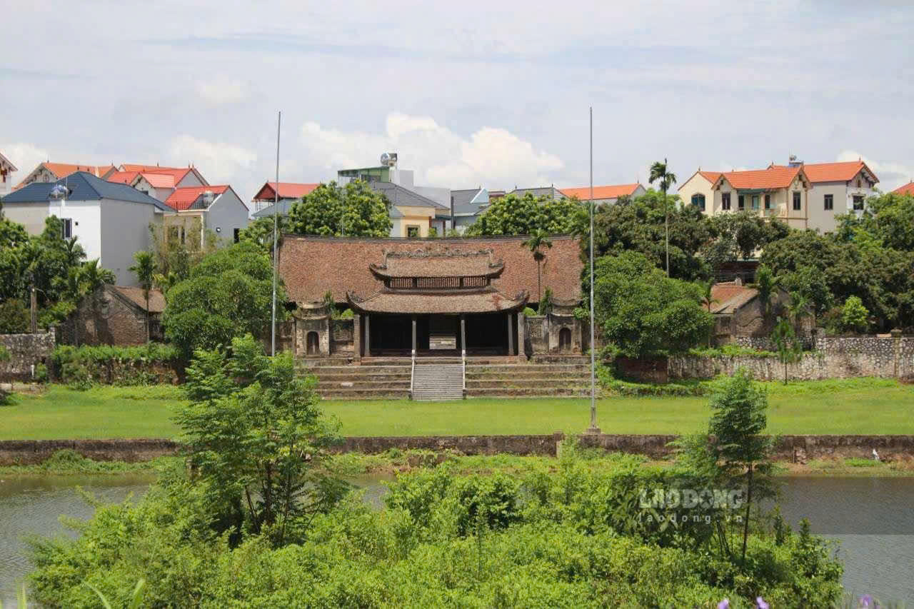
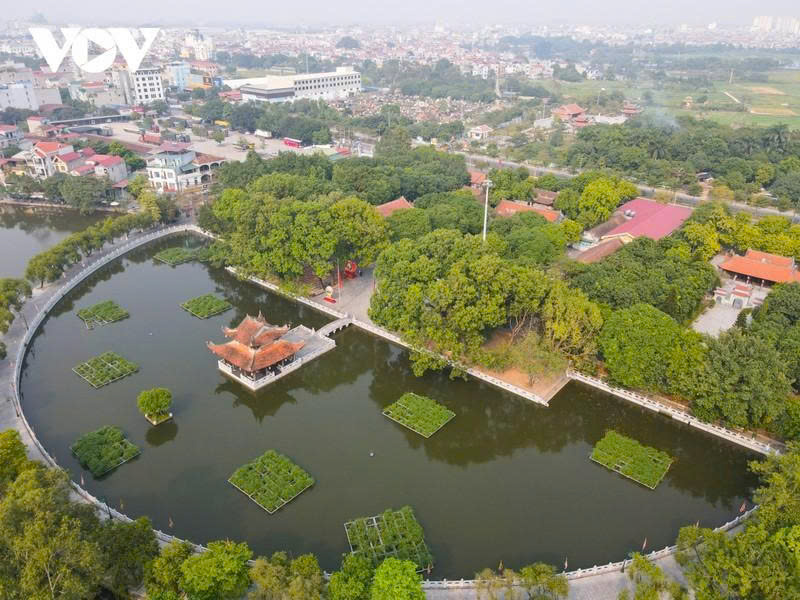

Tìm hiểu kiến trúc đình làng truyền thống
Khám phá các hạng mục kiến trúc và giá trị nghệ thuật.
Đình làng và không gian cộng đồng xứ Đoài
Hành trình Di sản số Xứ Đoài Khám phá di sản – Kết nối tri thức – Sáng tạo cùng công nghệ số



Khám phá các hạng mục kiến trúc và giá trị nghệ thuật.
Tìm hiểu lễ hội, sinh hoạt và sự gắn kết của người dân xứ Đoài.
Thiết kế triển lãm ảnh, video hoặc mã QR giới thiệu câu chuyện về Đình So.
Trải nghiệm không gian di sản, thu thập tư liệu thực tế.
Khai thác thông tin từ kiến trúc, lịch sử, nghệ thuật và đời sống cộng đồng.
Trao đổi với nghệ nhân, người dân, đối chiếu và xác thực tư liệu.
Tạo bộ ảnh, infographic, video, podcast, triển lãm số...
Nêu ý tưởng sáng tạo góp phần gìn giữ và lan tỏa giá trị di sản.
Di sản hôm nay là nhịp cầu nối quá khứ với tương lai.